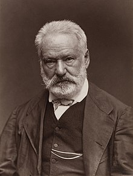

- 14 -
VICTOR HUGO
 .
.
Victor-Hugo (1802-1885).jpg
Ngày 27 tháng 2 năm 1881, Hugo bước vào tuổi 80, một đám quần chúng đông nghịt đứng kín đại lộ Eylau, nơi nhà đại văn hào ở, số 130, một khách sạn nhỏ nhìn ra hàng cây dẻ và một vườn hoa lớn. Từ sáng sớm những bức điện chúc mừng nối tiếp nhau bay đến, khách đến thăm nườm nượp, những bó hoa, quà biếu, thiếp mừng. Một đoàn đại biểu học sinh Paris đến đọc bài chúc mừng của Catulle Mendès. Tất cả các tỉnh của nước Pháp đều cử đại diện tới. Những lời chào mừng đến từ khắp châu Âu, từ khắp thế giới.
Đó là trường hợp duy nhất trong lịch sử và trong nền văn học Pháp về sự đồng cảm giữa quảng đại quần chúng, trong và ngoài nước Pháp với một nhà thơ.
Chiều hôm ấy, Hugo, mệt mỏi và sung sướng, rút lui để dự bữa cơm thân mật với Louis Blanc, người đã tham gia cách mạng 1848 lão thành sống lưu đày ở Luân Đôn vào giai đoạn cuối của Đế chế, người không hiểu công xã Paris nhưng sau đó đã nhất trí cùng Hugo quyết tâm bảo vệ nền cộng hòa. Năm sau Louis Blanc qua đời và Hugo viết điếu văn ca ngợi ông. Cuộc gặp mặt cuối cùng và bài điếu văn đó biểu lộ những hạn chế của điều mà bản thân Hugo gọi là “chủ nghĩa xã hội” của mình.
Nhưng hãy trở về với đám quần chúng khổng lồ trên đại lộ Eylau, và đám công chúng khổng lồ ở bên ngoài biên giới nước Pháp. Dân tộc Pháp và các dân tộc trên thế giới đã tìm thấy và sẽ tìm thấy trong tác phẩm của nhà thơ, nhà tiểu thuyết, nhà tư tưởng những lý do để suy ngẫm, để hy vọng và không nghi ngờ gì, để hành động, không chỉ trong những thời kỳ bi thảm của đời sống xã hội và cá nhân, mà trong tất cả những giờ phút mà trí tuệ con người mộng mơ về cội nguồn, về nguyên nhân và kết quả, về ánh sáng và bóng tối bao quanh mình.
Hugo là nhà văn của nhân dân, hiểu theo ý nghĩa cao quý nhất của từ này. Rất nhiều độc giả sẽ học tập qua tác phẩm của ông, tìm thấy ở đó tình yêu đối với âm nhạc và văn học. Những độc giả từng trải hơn sẽ khâm phục sức sáng tạo và tài tiên tri của nhà đại văn hào.
Đầu tháng 8 năm 1883, Romain Rolland, hồi ấy mới mười bảy tuổi, đang ở Thụy Sĩ, tại Villeneuve, trên bờ hồ Leman. Đột nhiên tin tức lan truyền trong công chúng: Victor Hugo cùng với các cháu mình trọ tại khách sạn Byron. Lập tức từ những vùng phụ cận, “cả một rừng người” kéo đến đón chào nhà thơ.
– “Người già quá rồi, tóc bạc phơ, da nhăn nheo, lông mày chau lại, đôi mắt hõm sâu! Tưởng như người bước ra từ bề sâu của tuổi tác!” – Rolland viết. “Tôi đứng rất gần, tôi căng tai nhưng không nghe được điều gì từ tiếng nói già cả không âm vang đang lẩm bẩm với đám đông - chỉ nghe thấy tiếng Hugo thét lên “Nền cộng hòa muôn năm” và để đền đáp lại đám đông gào thét: “Victor Hugo muôn năm!” và đôi mắt người tức giận, tay giơ cao như để gầm lên khi nhắc lại rằng chính nền cộng hòa cần phải được hoan hô”.
Hai năm sau, năm 1885 Romain Rolland cũng mò tới đại lộ Eylau khi quần chúng lại lũ lượt đổ về và chờ đợi. Ngày 15-3, Hugo “bị một cơn đau tim dữ dội”. Ngày 15-5 ông phát bệnh sung huyết phổi. Bảy ngày sau, Hugo qua đời. Đến tận giây phút tỉnh táo cuối cùng của mình ông đã gọi tên các cháu: George và Jeanne…
Đấy quả là một sự phong thần, nhưng nếu đọc lại những trang viết của những người có mặt ngày hôm ấy, nhất là của Romain Rolland hay Maurice Barrès, ta sẽ đánh giá thêm một lần nữa tầm quan trọng của sự hòa hợp giữa nhà thơ đã khuất - nhưng còn sống mãi - với đám quần chúng tập hợp xung quanh chiếc xe tang của Những người khốn khổ. Hơn một triệu người từ Khải hoàn môn đến điện Panthéon. Tất cả các giới lao động, tất cả các nước. Hai mươi bài diễn văn. Leconte de Lisle phát biểu thay mặt các nhà thơ…
Công việc chuẩn bị kéo dài tới mức thi thể của Hugo phải ướp tới mùng một tháng sáu. Sau hai ngày đặt tại Khải hoàn môn, trong đó một ngày do các nhà thơ túc trực, đám tang thật là một cảnh tượng dị thường. Barrès viết: “Linh cữu nổi lên trong đêm đen, trong khi những ngọn lửa đèn xanh lét nhợt nhạt làm cho hàng hiên Đế chế thêm sầu não với vô số lính kỵ mã mang đuốc giữ trật tự”.
Một cuộc đời dài, một sự nghiệp vĩ đại
Kể từ năm 1802, sức sáng tạo vô tận của Hugo đã bước qua gần trọn một thế kỷ, qua Đế chế thứ nhất, thời kỳ phục hưng thứ hai, chế độ quân chủ Tháng Bảy, nền Cộng hòa thứ hai, Công xã Paris, nền Cộng hòa thứ ba. Từ thời xe ngựa chở khách đến thời đại của điện và máy ảnh. Từ thời dệt lụa Lyon đến thời của Quốc tế ca, của Jean Mace và Jean Jaurès.
Cuộc đời của Victor Hugo không làm chúng ta cảm động vì trải qua năm tháng và đi cùng với những biến động của lịch sử, mà chính là vì cuộc đời ấy không tách rời cái phong trào khó khăn ấy đi từ bóng tối ra ánh sáng, từ chế độ chuyên chế đến sự giải phóng ngày càng hoàn hảo hơn.
Dù dè dặt đến chừng nào, dù chúng ta có thể nghe những tiếng cười khẩy hay những lời vu khống, chúng ta phải luôn luôn trở về với cái “ánh sáng sống động” mà Leconte de Lisle đã nói, luôn luôn suy nghĩ về sự nghiệp giải phóng con người mà Hugo suốt đời theo đuổi và bảo vệ, sự nghiệp mà tác phẩm của ông đã ghi lại dấu ấn qua tất cả các thời kỳ, thậm chí đôi khi mâu thuẫn ít nhiều với hoàn cảnh của con người hay của nhà văn. Cũng phải thấy rằng tiến trình này không bao giờ đảo ngược. Hugo thuộc về những người không bao giờ đi từ tả sang hữu!
Vì danh dự của tổ quốc mình? Tất nhiên. Trong cuộc đấu tranh chống nền độc tài, trong sự tố cáo chế độ kiểm duyệt, trong sự nghiệp bảo vệ những người bị áp bức, trẻ em, phụ nữ, nhưng rộng hơn là sự sáng suốt về chính trị cần thiết cho cuộc chiến đấu mà Hugo tiến hành ở Pháp và ngoài nước Pháp, chống chủ nghĩa phân biệt chủng tộc, chống bất công xã hội, chống chiến tranh.
Nhận thức về một sự thức tỉnh của các dân tộc
Trong bài diễn văn chào mừng Garibaldi, tại Jersey, bừng lên cái viễn cảnh tương lai đẹp lạ thường: “Hy vọng ở những luồng gió đằng chân trời. Hỡi những người mujik Nga, nông dân Ai Cập, hỡi người vô sản, người cùng khổ, hỡi người da đen nô lệ, người da trắng bị áp bức, tất cả hãy hy vọng; xiềng xích là một mạng lưới; chúng gắn liền với nhau; một chiếc bị đứt, mắt xích sẽ tung ra. Khi có động lực thúc đẩy, con người trở nên bất khuất”.
Hãy suy ngẫm về những dòng chữ cháy bỏng được viết cách đây hơn 100 năm!
Và những câu lên án cái vô nghĩa của vinh quang trận mạc: “Các tờ báo ở Anh kể rằng người ta đã chở từ châu Âu về Hull hàng triệu thùng xương người. Những đống hài cốt lẫn với xương ngựa này nhặt được trên các chiến trường Austerlitz, Leipzig, Lena, Friedland, Eylau, Waterloo. Người ta đã chuyên chở chúng tới Yorkshire, ở đây xương được nghiền thành bột và được gửi đến Doncaster để dùng làm phân bón. Như vậy, cặn bã cuối cùng của các chiến thắng của hoàng đế: Vỗ béo những con bò cái nước Anh”.
Cũng cần phải nói đến cái đa dạng và xù xì góc cạnh trong sáng tạo văn học của Hugo. Là tác giả của Những người khốn khổ, một cuốn tiểu thuyết mà quảng đại quần chúng xưa nay có thể học hỏi ở các trình độ khác nhau; của vô số những bài thơ được rạng soi bằng ánh sáng trắng của một sự mộc mạc không dễ dàng mà có được, và nói như Rolland, còn được rạng soi bởi “ánh sáng đen” của sự tìm tòi và nghi vấn, của lo lắng và kinh hoàng.
Có một Hugo của các em thiếu nhi, một Hugo của các thầy giáo, một Hugo của phụ nữ, một Hugo thân thiết với quảng đại quần chúng say mê những cuộc phiêu lưu mơ mộng, một Hugo bình dân, một Hugo trào phúng, người kế tục Villon, Ronsard, Corneille, nhưng cũng là một người báo trước cho muôn đời. Từ lâu trước Rimbaud, ông đã viết: “Các nguyên âm tồn tại cho mắt nhìn cũng gần như tai nghe và vẽ nên những màu sắc. Người ta thấy chúng. A và I là những nguyên âm màu trắng và sáng chói…”.
Một nhà văn trọn vẹn
Hugo là một người báo trước chủ nghĩa tượng trưng, trường phái Thi Sơn, chủ nghĩa siêu thực, một nhà sáng tạo của hình tượng hiện đại và những trò chơi ngôn ngữ ngày nay. Hãy nhớ đến Những câu thơ làm trong khi ngủ, có biết bao nhiêu nhà văn ngày nay chịu ơn ông.
Là con người mênh mông như đại dương? Đúng rồi. Điều mà ông nói về Shakespeare, người ta có thể nói về chính ông. Và chúng ta chưa nghiên cứu hết về ông. Tất nhiên là vì học thức hạn chế của chúng ta. Vì tất cả những hàng rào ông đã phá đổ xung quanh chúng ta, và có thể ở bên trong chúng ta. Vì hy vọng và óc phê phán mà ông gợi lên trong chúng ta. Nhưng cũng vì sự vui thích của chúng ta nữa. Ở đây, người ta không thể quá nhấn mạnh đến sự vui thích quá chừng, sự vui thích vô tận mà nhà thơ, nhà tiểu thuyết, nhà viết kịch đem lại cho chúng ta qua những trang sách. Còn phải phát hiện thêm rất nhiều điều trong tác phẩm của nhà báo thiên tài này, của nhà tư tưởng, người kể chuyện, nhạc sĩ điêu luyện của tiếng nói giản dị, tiếng nói phi thường này.
Victor Hugo
MỘT SIÊU SAO
Hơn một thế kỷ sau khi qua đời, Victor Hugor (1802-1885) lại trở thành nhà quán quân trong danh sách những đĩa CD ăn khách nhất với vở kịch chuyển thể từ tác phẩm của ông Nhà thờ Đức Bà ở Paris.
Con người này không chỉ là một nhà văn mà hơn thế rất nhiều: Một đấng hóa công, kẻ tạo ra bao huyền thoại. Hơn một thế kỷ sau khi qua đời, người ta vẫn không ngừng khám phá ông, cướp đoạt ông, và cả yêu ông nữa. Chưa bao giờ ra khỏi điện Panthéon, ông vẫn đứng sừng sững trong cảnh tượng thời cuối thế kỷ của chúng ta. Từ Paris đến New York, từ London đến Bruxelles, người ta diễn Hugo, người ta múa Hugo, người ta hát Hugo. Không có gì sống động hơn là bức tượng đó, không có gì thời sự hơn là tiếng nói đó, tiếng nói mà từ bao năm nói với chúng ta về công bằng, về bác ái, về vùng lên tranh đấu, về tự do. Bởi vì Hugo, không chỉ là một trưởng lão đầu bạc của văn học Pháp. Cũng không chỉ là một mạch mỏ cho các tác giả kịch bản điện ảnh không tìm được cảm hứng riêng. Đấy là một kẻ lưu đày, một kẻ phản kháng. Một con người dám khước từ. Một nhà lãng mạn, một kẻ chống sùng bái thần tượng, một kẻ dám chửi rủa trường phái cổ điển. Đấy là nhà quán quân của nền cộng hòa xã hội, người đã biến những kẻ bị đầy đọa trên mặt đất thành những anh hùng, những anh hùng của thời nay vì họ là con người của mọi thời. Esmeralda, là những kẻ không có giấy tờ. Cosette, là những đứa nhỏ lang thang. Quasimodo, là kẻ ngoài lề xã hội. Gavroche, một ca sĩ nhạc rap. Không nghi ngờ gì, đám đông chen chúc nhau xem vở nhạc kịch Nhà thờ Đức Bà ở Paris và những đứa trẻ mếu máo khóc với bộ phim của hãng Disney Thằng gù nhà thờ Đức Bà, bây giờ đã không còn qua lại mấy với Toàn tập tác phẩm của Hugo. Người ta mua những đĩa CD về Belle nhiều hơn là những cuốn sách do nhà xuất bản Pléiade in ra. Nhưng qua những điệp khúc rộ lên từng thời, chính là tiếng nói của Hugo đến với chúng ta, bảo rằng “Tôi thuộc về những kẻ bị loại bỏ và đầy ải”.
Ông đã từng náo loạn, vô dụng, mênh mông, bị đày đọa, chiến thắng, tồi tàn, quang vinh, bị truy nã. Ông đã ở trên vách đá Guernesey để đối thoại với thượng đế (và thượng đế đã đáp lời ông). Ông đã từng yêu những người đàn bà và tiền tài, những bức họa của Titan và những chiếc giường chật hẹp. Ông đã từng viết ra hai trăm câu thơ mỗi ngày vào những thời hứng khởi nhất. Cả một thế kỷ đi qua trước những khung cửa sổ của ông, bằng thơ, bằng những ca khúc và những khẩu hiệu hô vang. Ông lớn lao nhờ văn chương, bé nhỏ trong cuộc sống và ru ngủ hàng ngàn học sinh thú nhận với ông lòng khâm phục đượm màu ghen tị. Những tác phẩm của ông đã phục vụ (như người ta làm quân dịch) cho sân khấu, điện ảnh, nhạc kịch và tranh truyện. Có những trường học Victor Hugo, một ga điện ngầm Victor Hugo, những đại lộ Victor Hugo, những con tem (1930,1985), những tờ giấy bạc. Đâu đâu ông cũng có mặt và cũng không ở đâu hết. Đức Bà của Paris đã bán ra 50 vạn vé và đám đông chen chúc nhau để nghe các nhạc khúc Belle hay Au temps des cathédrales theo tiết tấu nhịp hai. Tóm lại Victor Hugo là một ngôi sao. Hơn nữa là một nhãn hiệu.
Ông ra đời vào lúc Chateaubriand xuất bản cuốn Thiên tài Thiên chúa giáo (một cái tên thật phù hợp với Hugo). Người cha ông là hạ sĩ quan hậu cần, chuẩn tá rồi thiếu tướng và là người chồng bị cắm sừng. Mẹ ông đi những đôi giày màu xanh lá cây để giẫm lên đất màu của Đế chế Pháp. Từ trẻ ông đã phát hiện ra văn học trong nhà tu kín, chất hoa tình trong thư viện và tôn vinh vợ mình chín lần trong đêm tân hôn như vị nữ thần của thi ca và nghệ thuật. Nhưng người vợ không bao lâu đã không còn trung thành với chồng, rồi đến lượt ông cũng thế. Một thời gian ông say mê những di tích cổ, rồi lại mê những con tàu, rồi những chiếc bàn xoay và trò chuyện thân mật với những nhân vật nổi tiếng trong đó có Marat, Napoléon đệ Nhất, và cả với Machiavel, Mahomet, Eschyle, Molière, Mozart… Cuộc đời ông như bao cuốn tiểu thuyết, bao bộ phim. Ông cũng đã đối thoại với Musset, trao đổi thư từ với Vigny, bị Saint-Beuve bội phản, trao đổi tình nhân với Dumas và Flaubert, nhận những bài thơ đầu tay của Verlaine và những lời ca tụng của Baudelaire, gặp Ingrès, đấu gươm với Stendhal, bị Zola chọc tức, được Balzac và Garibaldi quý trọng. Ông vừa là kẻ chính thống vừa là phần tử cộng hòa, là nguyên lão của nước Pháp vừa là lãng tử của giới quần thoa, là tín đồ công giáo trong văn chương và theo phiếm thần luận trong những trường hợp ngẫu nhiên. Ông đã chứng kiến việc thắp sáng thành công bằng khí đốt, thang máy thủy lực. Suốt đời mình, Hugo là một ngôi sao.
“Tôi tuyên bố không ngần ngại rằng tôi thuộc về những kẻ bị loại bỏ và đầy ải”, Hugo nói thế, và chính cái đó khiến người ta yêu mến ông ngày nay. Ông đã vật lộn như con sư tử để chống lại án tử hình, chống lại những tư tưởng thực dân, tiếp những mật sứ của nền cộng hòa da đen đầu tiên trên thế giới, Haiti, chưa nói đến việc ông khinh ghét Napoléon đệ Tam (với 19 năm lưu đày). Hugo đi qua công xã Paris với một nỗi hân hoan, phân phát những đồng xu cho những kẻ thiếu thốn và từng ăn thịt voi trước khi mua cho mình chiếc mũ lưỡi trai của người gác cổng. Sự dấn thân chính trị của ông phải trả giá bằng cái án tử hình của phe thù địch: Jean-Francois Criscelli, người dân đảo Corse, hứa thưởng 25.000 franc cho ai lấy đầu tác giả củaĐức Bà ở Paris. Đấy là lỗi lầm của Voltaire chăng? Hẳn thế.
Trong cuộc đời riêng, thiếu gì bi kịch. Một người em bị điên, hai đứa con trai yểu mệnh, một người con gái chìm nổi trong phi lý… Nhưng cũng có biết bao chuyện nực cười: bị cảnh sát bắt quả tang vì tội ngoại tình!
Chính là Victor Hugo đã sống cuộc sống của mình theo nước kiệu. Theo đuổi nàng thơ, ông làm đủ thể loại thơ; theo đuổi phụ nữ, ông đã ôm hôn hàng ngàn người, nghệ sĩ, đầy tớ, gái giang hồ. Quay trở lại với tự nhiên ư? Phải chăng đấy là lỗi của Jean-Jacques Rousseeau?
Ông yêu sân khấu - Từ vở Hernani đến Marion de Lorme, ông giẫm lên sàn diễn đều đều. Những tác phẩm của ông khai sinh cho một vở opéra (Rigoletto), một vở kịch (Choses Vues) một bài thơ giao hưởng của Liszt (Ce qu’on entend sur la montagne) và không biết bao nhiêu tác phẩm bắt chước hay mô phỏng. Đến lượt các họa sĩ cũng tìm cảm hứng trong đó, thường không thành công. Louis Boulanger làm một tổ khúc cho Đức Bà ở Paris năm 1938; Wierts vẽ Esmeralda và Quasimodo. Còn về điện ảnh, lạy Chúa, nó không ngừng đào xới cái kho của ông. Riêng Đức Bà ở Paris”, Albert Capelli dựng năm 1912, một biến thể khác vào năm 1923, nổi tiếng với Lon Chaney trong vai thằng gù. Năm 1928 là một chuyển thể khácCon người hay cười của Paul Leni; năm 1939 Quasimodo của Charles Laughton. Có thể kể thêm Ruy Blas của Pierre Billon năm 1947 với Danielle Darrieux và Jean Marais, rồi Đức Bà ở Paris năm 1956 với Gina Lollobrigida từng làm mê mẩn giới học sinh lớn tuổi; Marie Tudor lên màn ảnh năm 1966; Ruy Blas trở lại dưới cái tên Sự điên rồ của những kẻ quyền thế năm 1971 với Yves Montand và Louis de Funès. Rồi Những người khốn khổ của Claude Lelouche trước khi nó quay lại năm 1998 với Neeson và Uma Thurman, sự công phu của hãng Disney với bộ phim hoạt hình Thằng gù nhà thờ Đức Bà kèm theo việc bán ra những con búp bê Esmeralda và những trò đố Quasimodo. Những người khốn khổ đến với sân khấu nhạc kịch qua Alain Boubil và Claude - Michel Schonberg với 16 triệu khán giả trên thế giới. Tóm lại tác phẩm của Victor Hugo trở thành một mỏ vàng vô tận cho kịch bản điện ảnh.
Hugo - Thần tượng của nền cộng hòa
Ngày 5 tháng 9 năm 1870, vừa ra khỏi nhà ga phía Bắc, Victor Hugo đã nói với dân chúng Paris: “Các công dân, tôi đã từng nói rằng ngày nào mà nền Cộng hòa trở lại, tôi sẽ trở lại”. Ròng rã 19 năm trời, người anh hùng cô đơn đó sống cheo leo trên núi đá Guemesey để làm cho bản thân ông đồng nghĩa với nền Cộng hòa. Sau đó là 15 năm nữa và lễ quốc tang khắp nước khi ông qua đời. Trước chiếc giường tang, người ta dựng bức tượng của nền Cộng hòa, khoảng một triệu con người xuống đường, một “làn sóng Pháp” đổ đến cổng Khải hoàn để rước thi hài ông vào điện Panthéon. Chỉ với riêng việc đưa ông vào ngôi đền danh nhân trong chiếc quan tài của những người nghèo đã là huyền thoại của cả một thế kỷ từng chứng kiến ba nền Cộng hòa kế tiếp nhau.
Với mỗi nền Cộng hòa, Hugo đã có một tặng vật: Với nền Cộng hòa đầu là khúc quân hành cho những chiến sĩ Cộng hòa của năm thứ hai thấy phía sau lưng mình là: “Nền Cộng hòa vĩ đại chỉ ngón tay lên trời”. Với nền Cộng hòa thứ hai, là lời than vãn xé lòng của một người bà trước xác một cháu bé bị giết hại: “Tại sao người ta giết cháu, họ phải giải thích cho ta. Đứa bé đã không gào lên nền Cộng hòa muôn năm”. Với nền Cộng hòa thứ ba, là cái hoán dụ vừa chua chát vừa hào hùng của sự lưu đày. Cả một dân tộc trẻ thơ từ đó, qua những cuốn sách giáo khoa, biết ra được hình ảnh suy tư của người ông của nền Cộng hòa, đọc thuộc các câu thơ của ông và chơi bi trên các sân trường Victor Hugo. Âm hưởng của sự nghiệp ông vang xa đến những xó xỉnh câm điếc nhất của những vùng quê Pháp.
Le Toinou d’Antoine Sylvère, cây con hoang dại của Ambert, thừa nhận trong cuộc đời mình đã gặp một dịp may: người cha đã trả dần 15 xu mỗi tháng để mua được cuốn truyện Những người khốn khổ. Nên nhớ rằng thiên truyện này vào năm 1862 khi xuất bản lần đầu con số phát hành đã lên tới 130.000 bản, cuốn truyện mà như tác giả đã thừa nhận, là “lời phản kháng chống lại sự hà khắc” và Hugo đã đứng về những nạn nhân xã hội, người tù Jean Valjean, cô gái điếm, cô bé mồ côi, cậu bé bụi đời…
Những người khốn khổ chính là “Thiên sử thi của những bần dân” và Victor Hugo, như ông từng tự nói với mình, là “một người xã hội chủ nghĩa” của thời xưa.

.